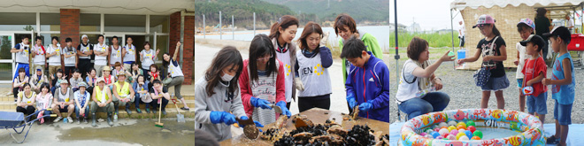
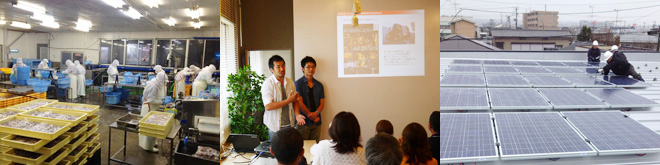

皆さまにお買い上げいただいた2012年3月の全店舗売上げから3億円と皆さまからお預かりした募金10,928,565円を合わせて復興支援金といたしまして、東北で自立支援、雇用創出、経済支援に取り組む団体を3年間支援してきました。支援をもとに新しいビジネスが生まれる、被災地の高校生が夢を見つける手助けをするなど、成果が出始めています。ユニクロの従業員も、ボランティアや、福島県の高校生への職業体験やキャリア教育などの人材育成のプログラムを通し、活動に参加してきました。
参加NGO団体

現在、宮城県石巻市の中でも特に支援の行き届いていないエリア(市内の住宅街や牡鹿半島、旧北上町など)にフォーカスし、被災者の自立に向けた生活支援、自立支援、心のケアを組み合わせて活動を実施しています。


地場産業の単なる復旧を超えた、地域のつながりを創生する新たな展開を支援するため、地域経済への波及効果、企業と個人の連携、事業性と社会性の融合を特徴とする、新たなタイプの基金を立ち上げています。